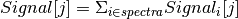
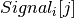
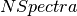

SumSpectra dialog.
Table of Contents
The SumSpectra algorithm adds the data values in each time bin across a range of spectra; the output workspace has a single spectrum. If the input is an EventWorkspace, the output is also an EventWorkspace; otherwise it will be a Workspace2D.
| Name | Direction | Type | Default | Description |
|---|---|---|---|---|
| InputWorkspace | Input | MatrixWorkspace | Mandatory | The workspace containing the spectra to be summed. |
| OutputWorkspace | Output | MatrixWorkspace | Mandatory | The name of the workspace to be created as the output of the algorithm. A workspace of this name will be created and stored in the Analysis Data Service. |
| StartWorkspaceIndex | Input | number | 0 | The first Workspace index to be included in the summing |
| EndWorkspaceIndex | Input | number | Optional | The last Workspace index to be included in the summing |
| ListOfWorkspaceIndices | Input | int list | A list of workspace indices as a string with ranges, for example: 5-10,15,20-23. Optional: if not specified, then the Start/EndWorkspaceIndex fields are used alone. If specified, the range and the list are combined (without duplicating indices). For example, a range of 10 to 20 and a list ‘12,15,26,28’ gives ‘10-20,26,28’. | |
| IncludeMonitors | Input | boolean | True | Whether to include monitor spectra in the summation. |
| WeightedSum | Input | boolean | False | Instead of the usual spectra sum, calculate the weighted sum. This has the form:  This property is ignored for event workspace. The sums are defined for This property is ignored for event workspace. The sums are defined for  only, so the values with zero error are dropped from the summation. To estimate the number of dropped values see the description. only, so the values with zero error are dropped from the summation. To estimate the number of dropped values see the description. |
| RemoveSpecialValues | Input | boolean | False | If enabled floating point special values such as NaN or Inf are removed before the spectra are summed. |
| MultiplyBySpectra | Input | boolean | True | For unnormalized data one should multiply the weighted sum by the number of spectra contributing to the bin. |
Takes a workspace as input and sums all of the spectra within it maintaining the existing bin structure and units. Any masked spectra are ignored. The result is stored as a new workspace containing a single spectra.
If we define a the  spectrum with bins
spectrum with bins  . The unweighted sum is just (WeightedSum=False)
. The unweighted sum is just (WeightedSum=False)

The weighted sum (WeightedSum=True and MultiplyBySpectra=True, ignored for event workspaces), the sum is defined (skipping  when ![Error_i[j] == 0](../_images/math/3317f21fd73a388cc171eca99d5e7675b81145bb.png) ),
),
![Signal[j] = NSpectra \times \displaystyle\Sigma_{i \in spectra} \left(\frac{Signal_i[j]}{Error_i^2[j]}\right) / \Sigma_{i \in spectra}\left(\frac{1}{Error_i^2[j]}\right)](../_images/math/a1e13adad69fe4575cb6e5d46315bf19c7839b84.png)
 is the number of spectra contributing to that bin. If the weights contributing to the sum are equal, these result in the same value. This should be used for unnormalized (e.g. not divided by vanadium spectrum) data. If the data has been normalized (e.g. divided by vanadium spectrum for total scattering) then multiplying by the number of spectra contributing to the bin is incorrect, use WeightedSum=True and MultiplyBySpectra=False to sum as
![Signal[j] = \displaystyle\Sigma_{i \in spectra} \left(\frac{Signal_i[j]}{Error_i^2[j]}\right) / \Sigma_{i \in spectra}\left(\frac{1}{Error_i^2[j]}\right)](../_images/math/2e422023af9042efcbcae159c7241abd137c3ccc.png)
The algorithm adds to the OutputWorkspace three additional properties (Log values). The properties (Log) names are:
Assuming pWS is the output workspace handle, from Python these properties can be accessed using:
nSpectra = pWS.getRun().getLogData("NumAllSpectra").value
nMaskedSpectra = pWS.getRun().getLogData("NumMaskSpectra").value
nZeroSpectra = pWS.getRun().getLogData("NumZeroSpectra").value
Example - a simple example of running SumSpectra.
ws = CreateSampleWorkspace("Histogram", Random=True)
print("Workspace has %d spectra" % ws.getNumberHistograms())
ws = SumSpectra(ws)
print("Workspace has %d spectra" % ws.getNumberHistograms())
Output:
Workspace has 200 spectra
Workspace has 1 spectra
Example - running SumSpectra with a list of indices.
ws = CreateSampleWorkspace("Histogram", Random=True)
print("Workspace has %d spectra" % ws.getNumberHistograms())
ws = SumSpectra(ws, ListOfWorkspaceIndices='0-3, 10-13')
print("Workspace has %d spectra" % ws.getNumberHistograms())
Output:
Workspace has 200 spectra
Workspace has 1 spectra
Example - a running SumSpectra with a start and end index.
ws = CreateSampleWorkspace("Histogram", Random=True)
print("Workspace has %d spectra" % ws.getNumberHistograms())
ws = SumSpectra(ws, StartWorkspaceIndex=0, EndWorkspaceIndex=9)
print("Workspace has %d spectra" % ws.getNumberHistograms())
Output:
Workspace has 200 spectra
Workspace has 1 spectra
Example - a running SumSpectra in weighted sum mode.
ws = CreateSampleWorkspace("Histogram", Random=True)
print("Workspace has %d spectra" % ws.getNumberHistograms())
ws = SumSpectra(ws, WeightedSum=True)
print("Workspace has %d spectra" % ws.getNumberHistograms())
Output:
Workspace has 200 spectra
Workspace has 1 spectra
Categories: AlgorithmIndex | Transforms\Grouping
C++ source: SumSpectra.cpp (last modified: 2019-07-17)
C++ header: SumSpectra.h (last modified: 2018-10-05)